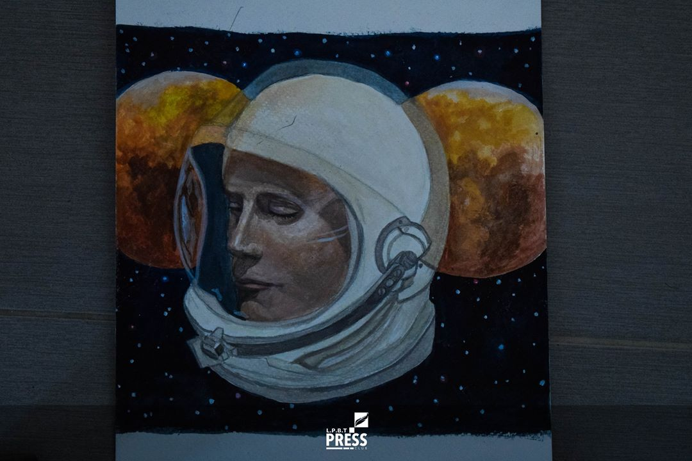
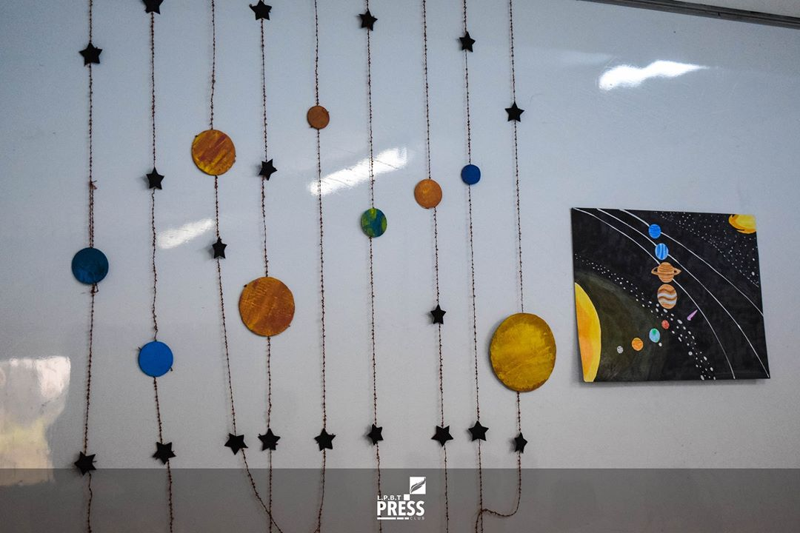
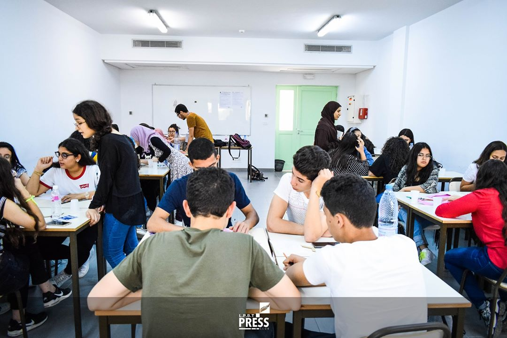
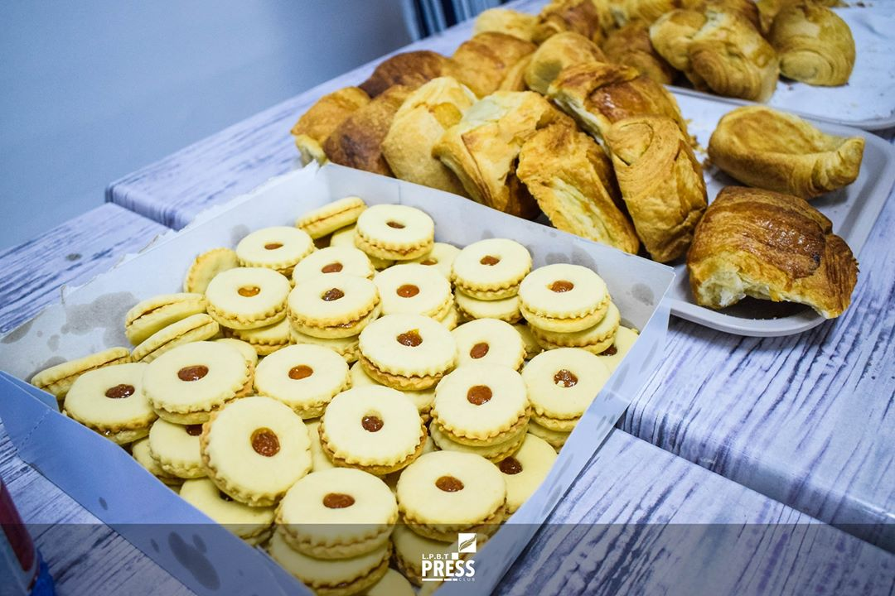
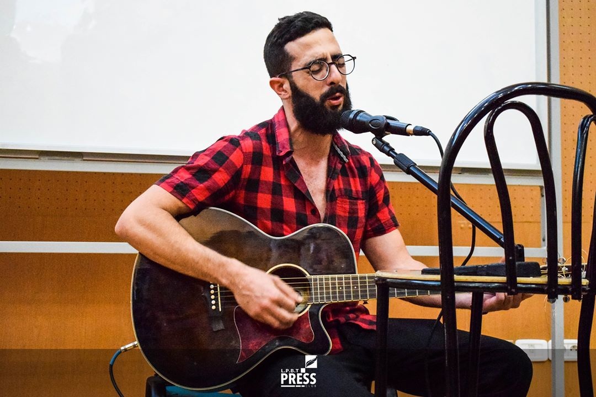
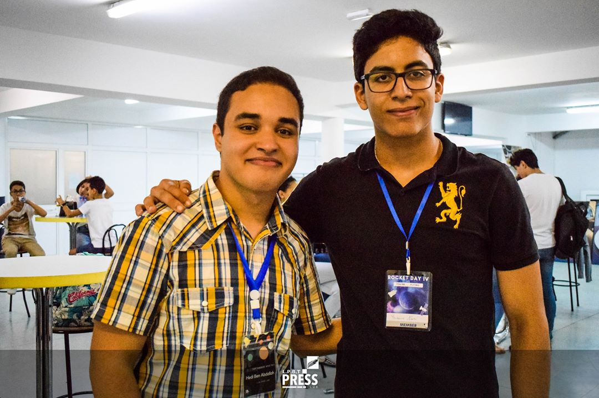

Le dimanche 9 juin 2019 était un jour mémorable pour les membres du Club Espace LPBT ainsi que pour les jeunes participants à leur événement dans sa 4ème édition: Rocket Day IV. L’évènement s’étendit sur toute une journée au siège de l’ULT (Université Libre de Tunis), présentant plusieurs activités interrompues par deux pauses-café et une pause déjeuner.
À 8h30, tout était déjà prêt au hall de l’ULT pour accueillir les participants. On vérifia leurs tickets ou on en leur vendit sur place, puis on leur donna des bracelets en bois où était gravé ”Rocket Day“par référence au nom de l’événement. En même temps, les préparatifs pour les ateliers qui occupèrent toute la matinée étaient en cours. Le local était décoré par de petits gadgets faits à la main en relation avec le thème de l’événement. Il y avait aussi des tableaux magnifiques dessinés par Oussema Kraiem, un membre du club.
Le commencement des ateliers a été un peu retardé car plusieurs participants ont confondu une autre ULT avec le local de l'événement. Le petit embrouillement a été vite résolu et rapidement oublié. À 9h40, l’événement put enfin commencer après le discours de bienvenue lancé par le président Yassin Khayati. Les participants rejoignirent les ateliers qu’ils avaient choisis d’avance. Ils formèrent des groupes pour construire des maquettes de fusée, d’hélicoptère ou de voiture. L’atelier de la montgolfière annoncé par le club avant l’événement a été malheureusement éliminé en raison du nombre faible des participants qui l'ont choisi. Le matériel nécessaire a été fourni par le club. Un exemplaire a également été fourni dans chaque atelier du travail demandé par les groupes. Le travail était essentiellement artistique mais comportait aussi un côté scientifique: il fallait, par exemple, faire attention au poids de la fusée, au frottement concernant la voiture, et il fallait être précis quant aux mesures des hélices de l’hélicoptère. Les membres aidaient, expliquaient, et supervisaient les participants avec efficacité. Ces derniers témoignèrent d’une créativité immense qui fut remarquée dans leurs travaux.
À 11h, il était temps pour une petite pause-café. Les participants descendirent à la cafétéria de l’ULT où ils prirent un café, du jus, des croissants et du sablé. Puis, ils revinrent aux ateliers pour mettre la dernière main à leurs travaux. Vers 13h, ils déjeunèrent. Chacun d’eux eut droit à un casse-croûte, des frites et une petite bouteille d’eau.
À 14h, les activités de l’après-midi commencèrent. On assista à la conférence d’Elyes Manai sur le "self improvement" (ou développement personnel). Son discours était simple et ponctué de quelques plaisanteries appréciées. Après, le professeur Faouzia Charfi se présenta, parla des sciences en général t de son parcours en tant que professeure et physicienne, et donna une brève introduction au monde de la physique quantique. Elle conclut avec une phrase remarquable : «Tout est possible avec de l’intelligence, de la liberté et beaucoup d’imagination». Les deux speakers consacrèrent du temps pour répondre aux questions des participants. On assista ensuite à une performance solo par le talentueux guitariste Taher Kharrat. Il chanta et joua plusieurs genres de musique en Anglais et en Arabe au milieu des acclamations des spectateurs qui reprirent les refrains et chantèrent après lui avec entrain.
À 15h20, on se dirigea vers la cafétéria pour la deuxième pause café. Cette fois, les membres du club servirent du jus, des mini pizzas, des minis fricassés et des tartelettes salées, le tout décoré par de petites images en relation avec l’espace. Après, on se regroupa dans une cour extérieure de l’université où on essaya les voitures, les hélicoptères et les fusées construits, issus des différents ateliers. Presque toutes les inventions furent considérées des réussites. Puis, on revint à l’amphithéâtre où les chefs des ateliers désignèrent le travail gagnant de leurs ateliers respectifs et présentèrent au groupe gagnant des certificats. L’évènement se termina dans l’euphorie générale. En gros, les participants ont apprécié la bonne organisation et ont considéré l’événement comme fort intéressant.
